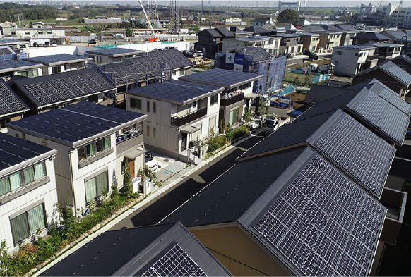

インタビュー一覧
SDGs達成に取り組む企業や自治体、学校の皆さんにインタビュー。取り組みのアイデアや未来に向けた想いを伺います。

ダミースープは「もったいない」と相性が良い

SDGsに取り組むパン屋を名古屋市千種区にオープン

誰かの不要が誰かの必要になる｜循環型社会への挑戦

一人ひとりが輝く社員｜多様性を尊重する職場づくり
ダミーマイタンブラー持参で割引のカフェ――エシカルでお得なSDGsを

ダミー二酸化炭素を減へらしてクリーンな空の旅を

ダミーだれもが平等にやりがいを持って働ける環境づくり

ダミーいつまでも安心して住み続けられるまちをつくる

ダミー 「グリーンなお金の流れ」で持続可能な社会をつくる

バタフライマークは「水なし平版」を使用。環境保全に取り組む印刷会社

ダミーSX専門家に聞く「マテリアリティの特定に関するお悩みへの助言」
ダミー国連広報センター所長 □□□□さんに聞く SDGsのいま、これから、私たちにできること
ダミースープは「もったいない」と相性が良い|スープストックトーキョーならではのSDGsとは
ダミー電気工事を請け負う会社、“SDGsに取り組むパン屋”を名古屋市千種区にオープン。～再生可能エネルギーを使